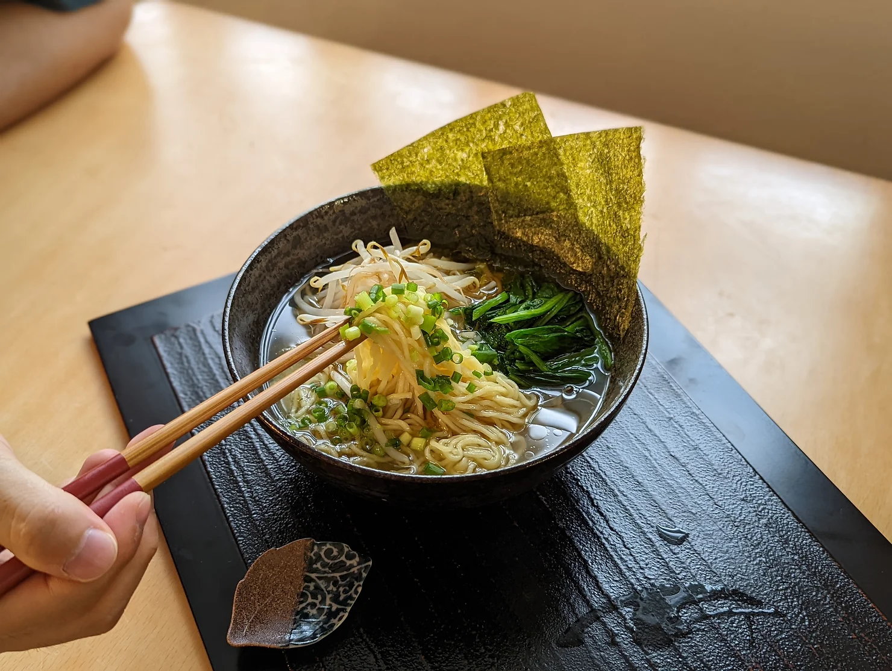

EASY HEALTHY RAMEN/ヘルシービーガン拉麺

Ingredients
4 pieces dried shiitake mushroom
1 tsp soup stock powder/ bouillon cube
1 tsp shio koji/ ⅛ tsp salt
Directions
Soak kombu and dried shiitake mushrooms in water and let it sit in the fridge overnight. When the shiitake mushrooms are fully hydrated, remove it from the broth, but keep the kombu.
To the pot, add kombu shiitake broth ( step1). Just before it comes to a boil, remove kombu from the pot. Add cooking sake and soup stock powder. Once it comes to a boil,off the heat. Add shiokoji, soy sauce, grated garlic and grated ginger.
Cook ramen noodles according to the package instructions. Prepare your favorite toppings.
Pour your soup into the bowl. Make sure the soup is hot. Add cooked noodles. Drizzle toasted sesame oil. Garnish your favorite toppings.